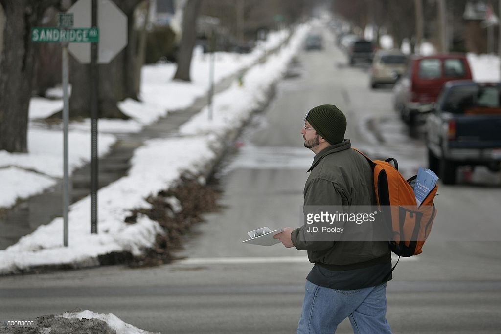
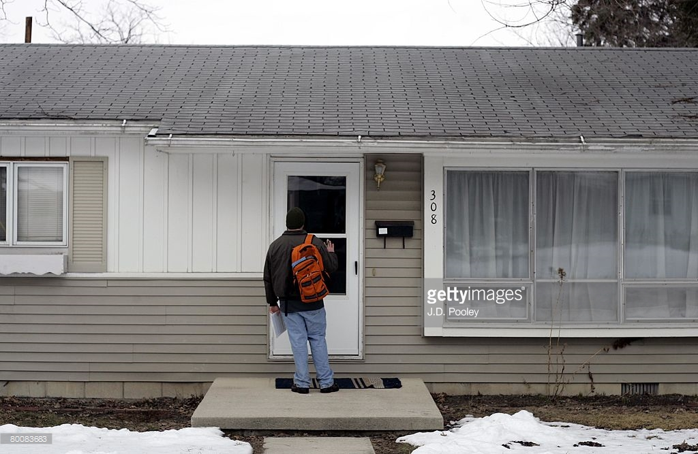
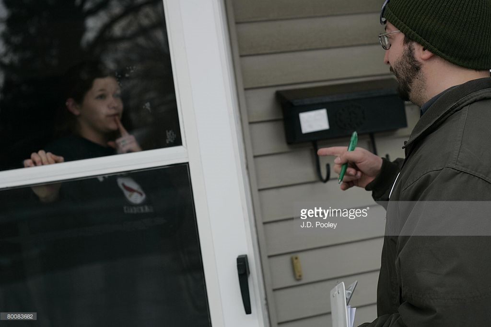
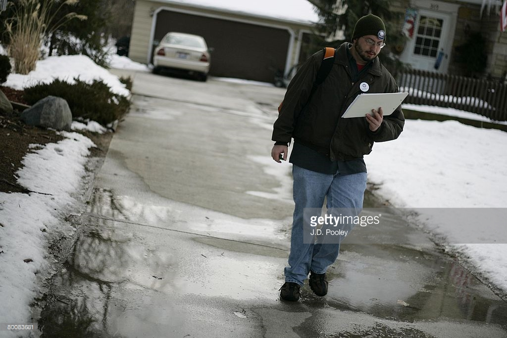

Andy Adventures
There are a lot of wonderful things in the world. There are also a lot of stressful things. This page is to help one relax and enjoy the better things in life such as Andy. There is no doubt that Andy helps the world go round as well as improve someones day. Without further ado, Awesome Andy presents, Andy Adventures:
Here we have the wondrous Andy walking around with his iconic orange backpack. Many claim that the orange backpack trend was created by Andy himself. Most likely, from this picture there was an explosion behind Andy, since cool guys don't look at explosions.

Here we have Andy taking on the cold with his orange backback. In this picture, sponsored by Getty Images, Andy has traveled to the mysterious Sandridge. No one is entirely sure where Sandridge is, or why Andy has traveled here, however he was there which means it is important.

Andy has closed in on one of his fans. This must be the reason he has traveled far and wide along the sandridge landscapes. Here he is waiting patiently for his fan to appear so he can brighten up their day.
What a great guy Andy is. Traveling places just so people can be happy.

Finally, Andy meets face to face with his fan. They are speechless at the sight of this wondrous man. It looks as if their finger is over their mouth, with no words to speak. Andy is holding a clip board for many reasons. Historians theorize that he is giving an autograph. Others say he is conducting a survey on how well people like him.

The advendture of Andy concludes. He walks away from another satisfied fan. Andy you've done it again. Who knows where he will go next. Perhaps to find more fans, or fight aliens in an intergalactic space battle. Maybe he'll just relax and play some Runescape, one of his favorite Hobbies. Either way, Andy has influenced the world for the better.